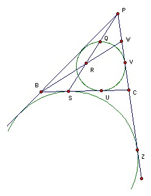

The incircle of the triangle PBC touches BC at U and PC at V. The point S on BC is such that BS = CU. PS meets the incircle at two points. The nearer to P is Q. Take W on PC such that PW = CV. Let BW and PS meet at R. Show that PQ = RS.
Solution

The excircle opposite P touches BC at S (consider tangents - the tangents from P have length PC + CS etc). Contract about P so that the excircle becomes the incircle. The point S goes to a point on PS at which the incircle touches a line parallel to BC. This point must be Q. Let PC touch the excircle at Z. Then Z goes to V, so PQ/QS = PV/VZ = CW/(VC + CZ) = CW/(CU + CS) = CW/(CU + BU) = CW/BC.
Now consider the triangle PSC. The line BRW cuts PS at R, CP at W and SC at B, so by Menelaus' theorem, we have (SR/RP) (PW/WC) (CB/SB) = 1. But SB = CU = CV = PW, so this gives SR/RP = CW/BC = PQ/QS. Hence PQ = RS.

© John Scholes
jscholes@kalva.demon.co.uk
11 May 2002
Last corrected/updated 28 Nov 03